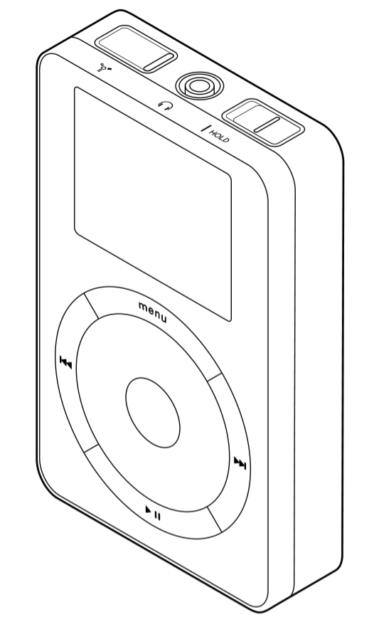
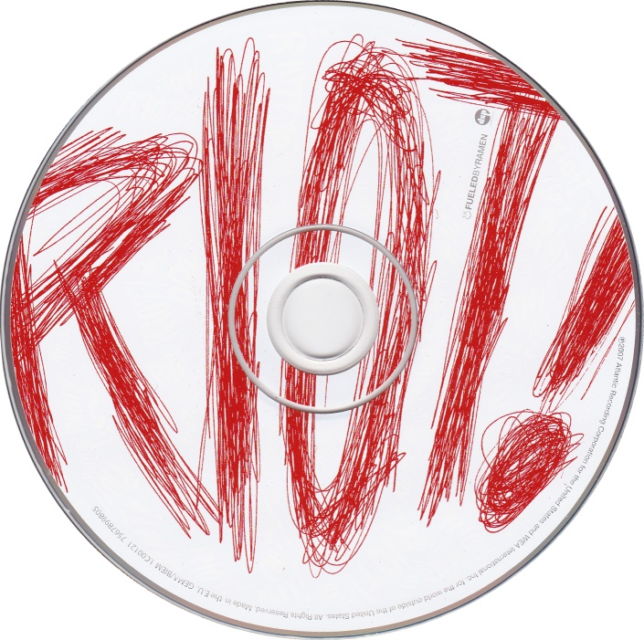

Mariia: Why do you want to talk about iPod Nano?
Sarah: Well, I was really thinking between Spotify and the iPod Nano. When I look back at impactful interfaces in my life, I feel like music has been such a huge part of that. So, I feel like the iPod Nano third generation is my very first kind of device outside of my phone. And l just remember I loved it so much.
Mariia: Can you break down how you were accessing music back in your childhood?
Sarah: I would say my parents liked playing CDs, cassette tapes and that kind of stuff. My mom would listen to the radio. And then I would illegally download songs on my computer via, like, LimeWire. Do you remember that software?
Mariia: Yesss, I do! All of us have been there.
Sarah: Yeah, you could download a virus there. And then moving on I used YouTube to download music through a converter.
Mariia: And then, iPod Nano came into scene?
Sarah: Yes, I had this one. This is one exactly.
Sarah: I think I got this when I was... How old was I? I was still young, like 14 or 15. And then I really liked the green color. So, I got a green one. It was a birthday present. I was really into, punk rock back then, like Paramore, Chemical Romance, and all these punk rock bands. And I had these Paramore posters covering my wall.
Mariia: And what makes the iPod that specific association with that time? Is it a color or an interface itself?
Sarah: I don't think it's so much the color. I think it's just the shape of the metal because we don't really have such devices anymore. It's such a weird square. And then the interface is so iconic for the iPod generation of that time because we don't really have this dial anymore. It's such a nuisance to use, right? If you want to type on it, you must go round and round and round. I think it's like a cultural totem of its time.
Mariia: Is there any other striking differences that come to your mind, comparing then and now?
Sarah: I feel like it's so nostalgic of an era where our devices were much more personalized. Nowadays all our phones look the same. But even if we take the mobile phones back then, I had a flip phone, they looked so different. And when you flipped it and made it sound like this. It felt like every device from that era had a personality. At least, I felt like my device had a personality. And I feel not sad about it, but maybe, bittersweet. Even though we can personalize our devices aesthetically, pick different materials for the cover, change the background, the hardware stays the same.
Mariia: I get it! Yet those devices and experiences using them were quite limited.
Sarah: Yeah, you had this touch pad and then you were constantly scrolling down. It was just super annoying. When you think about it, it's not very intuitive, right? It isn't a normal human action that we do. Yeah. So that's how I would scroll through my music. I think you could select from albums; you could go through your entire music playlist, and then you could go by artists. I think the rest of the songs were just like A to Z, which is super annoying because you would have to scroll all the way down if you had a long list. You would have to scroll for ages.
Mariia: Is there anything in that experience that you miss?
Sarah: Actually, one thing I do miss about the iPod, I guess it's kind of what works with iTunes, is that you could upload your own cover photo for an album. It's like if I didn't like an album cover, I would upload my own.
Mariia: That's so cool! Why I never did that?
Sarah: So, I've always been very conscious about, even though it may sound weird, the visual aspect of music. I curated all the playlist covers because I'm just annoying like that - Super conscious about the aesthetic of my music.
Mariia: Nothing weird about it. I mean, album covers they are like a kind of a connection with vinyl, aren't they? Even though, it is maybe an attempt to imitate authenticity, it's also a design decision and, a good one.
Sarah: And there are bands who have specific logos or iconic covers. What's the most iconic album cover? Probably the Beatles with the crosswalk.
Mariia: Yeah. Or Nirvana's baby.
Sarah: Yesss. It's probably also a marketing tactic. It makes the music more memorable if you have a memorable album cover.